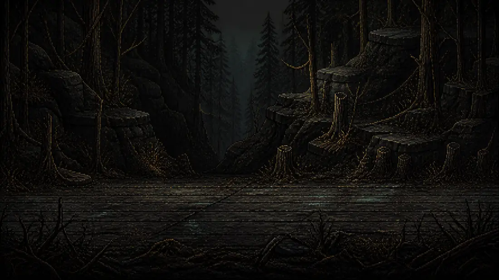
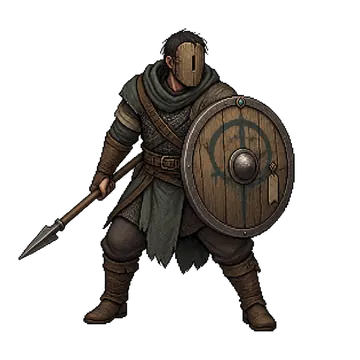
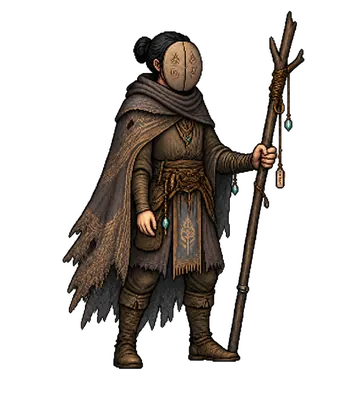
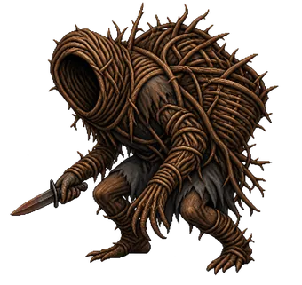
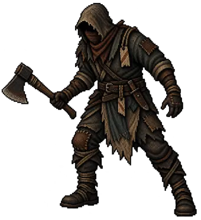
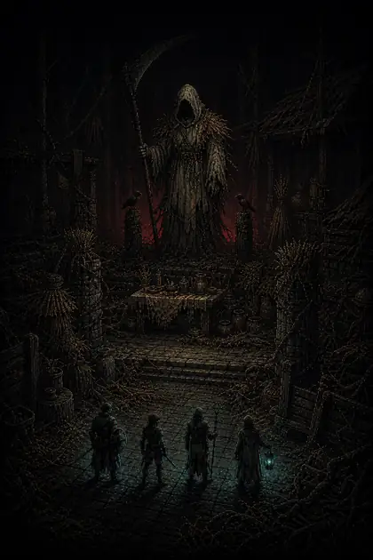
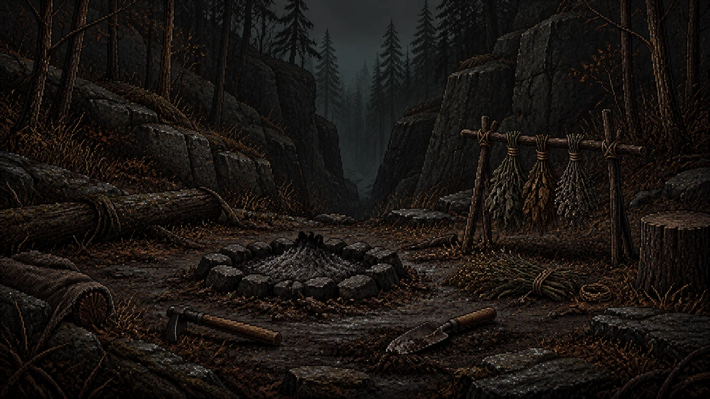

怪異探查局
用卡牌指揮隊伍
卡牌會累積成全隊共用的職能。你規劃下一步，同伴承擔結果。





01 · 出牌流程
出牌之後，隊伍自行行動
攻擊、防禦與支援卡牌會形成共用職能堆疊，同伴依照堆疊與隊形採取行動。
- 使用卡牌 決定隊伍此刻需要的職能。
- 累積職能 全隊共用同一組角色資源。
- 同伴行動 自動戰鬥讓每次選擇留下結果。
元素術士行動序列
哥布林行動序列
02 · 調查隊編成
多種職能，一支調查隊
調查員不直接揮動武器，而是透過卡牌引導同伴的下一個行動。
目前顯示：封鎖兵
03 · 已知威脅
怪異正在回望
哥布林、掠奪者與收割者只是目前公開的威脅，其餘紀錄仍等待調查員確認。
從民間傳說展開的故事
故事靈感來自韓國、日本、中國、台灣等地的民間傳說。我們將各地流傳的故事，在《怪異探查局》的世界中重新詮釋。

04 · 事件抉擇
每次探索都要取捨
事件迫使調查員在情報、資源與風險之間做出選擇，並帶著結果繼續深入。

05 · 核心玩法
用 30 秒看見核心玩法
正式頁面將依序呈現卡牌輸入、自動戰鬥、事件選擇與收割者概念畫面。
30 秒展示影片預定
06 · 開發紀錄
入選與獲獎
- 入選大邱遊戲人才培育計畫
- 入選預備創業團隊
- 獲獎2026 台灣 InnoTech 展覽
- 銅獎・特別獎
- 獲獎2026 泰國發明展
- 特別獎與台灣 InnoTech 展覽同期舉行的活動。
怪異探查局
本頁使用開發中的概念視覺呈現遊戲氛圍與系統方向，並不代表最終遊戲畫面。
形式
遊戲
類型
黑暗恐怖 Roguelike 牌組構築自動戰鬥
狀態
開發中・預計於 Steam 推出
Steam 頁面
預計於 2026 年 12 月至 2027 年 2 月開設